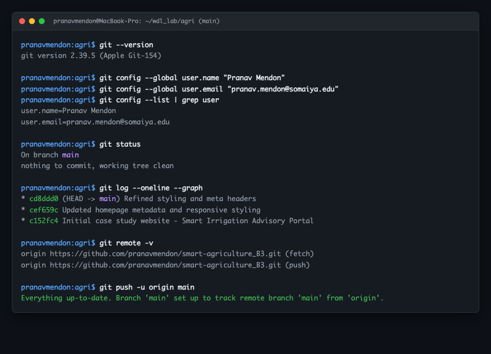

| Course Name: | Web Development Laboratory (316U01L306) | Semester: | III |
| Date of Performance: | 05 / 08 / 2026 | DIV / Batch No: | B - 3 |
| Student Name: | Pranav Mendon | Roll No: | 16010125138 |
- Understand the concept and importance of version control in modern web development.
- Install and configure Git and create a local Git repository.
- Track website files using working directory, staging area, and local repository.
- Use essential Git commands: init, status, add, commit, log, diff, branch, remote, push, pull, clone.
- Create and manage a remote repository on GitHub.
- Upload Experiment 1 and 2 files to GitHub using meaningful commits.
- Demonstrate synchronization between a local repository and GitHub.
- Git Documentation: https://git-scm.com/docs
- GitHub Documentation: https://docs.github.com/
- Git Exercises: https://gitexercises.fracz.com/
Version Control: A system that records changes to a file or set of files over time so that specific versions can be recalled later.
Git: A distributed version control system where every user has a complete local repository with full history, enabling offline branching, cryptographic commit hashing, and fast operations.
Basic Git Workflow: Working Directory → Staging Area → Local Repository → Remote Repository (GitHub).
Core Commands: git init, git status, git add, git commit, git log, git diff, git branch, git remote, git push, git pull, git clone.
Commands & Console Execution Log:
# 1. Verification and User Configuration $ git --version git version 2.39.5 (Apple Git-154) $ git config --global user.name "Pranav Mendon" $ git config --global user.email "pranav.mendon@somaiya.edu" $ git config --list | grep user user.name=Pranav Mendon user.email=pranav.mendon@somaiya.edu # 2. Local Repository Initialization $ cd /Users/pranavmendon/Documents/code/wdl_lab/agri $ git init Initialized empty Git repository in /Users/pranavmendon/Documents/code/wdl_lab/agri/.git/ # 3. Staging and Initial Commit $ git add . $ git commit -m "Initial case study website - Smart Irrigation Advisory Portal" [main (root-commit) c152fc4] Initial case study website - Smart Irrigation Advisory Portal 24 files changed, 2908 insertions(+) # 4. Modification and Second Commit $ git diff index.html $ git commit -am "Updated homepage metadata and responsive styling" [main cef659c] Updated homepage metadata and responsive styling # 5. Remote Linking & Push $ git remote add origin https://github.com/pranavmendon/smart-agriculture_B3.git $ git branch -M main $ git push -u origin main Branch 'main' set up to track remote branch 'main' from 'origin'. # 6. Cloning & Synchronization $ git clone https://github.com/pranavmendon/smart-agriculture_B3.git agri_clone $ cd agri_clone && git commit -am "Updated content via clone" && git push $ cd ../agri && git pull origin main Fast-forward | 1 file changed, 1 insertion(+)

1. What is the purpose of git clone? How is it different from downloading a ZIP file from GitHub?
• git clone downloads the files along with the hidden .git repository directory, preserving full commit history, all branches, tags, and automatically configures the origin remote tracking link so developers can push and pull.
• Downloading a ZIP extracts only the current state of files with no history, no branches, and no tracking connection to GitHub.
The experiment provided hands-on mastery over distributed version control workflows using Git and GitHub. Understanding the relationship between the working directory, index, and commit history clarified how software teams safely collaborate, track feature changes, and synchronize distributed repositories.
Peer feedback:
1. Rohan Sharma (16010125140): "The commit history is clean, and the commit messages clearly communicate the incremental additions to the codebase."
2. Ananya Verma (16010125142): "Demonstrating synchronization with a secondary cloned repository helped clearly illustrate how collaborative Git teams operate."
3. Aditya Kulkarni (16010125145): "The repository structure is well organized and all HTML, CSS, and JS files track without merge artifacts."